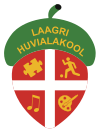

    <!-- About Section -->
    <section id="about">
    

        <div class="container">

            <div class="row about-content">


                <div class="col-lg-5 col-lg-offset-2 col-sm-6">
                    <div class="row">
                      <div class="col-xs-6 ">
                        
                      </div>
                      <div class="col-xs-6">
                        
                      </div>
                    </div>
                    <div class="row">
                      <div class="col-xs-6">
                        
                      </div>
                      <div class="col-xs-6">
                        
                      </div>
                    </div>
                </div>

                <div class="col-lg-5 col-sm-6">
                    <!-- <hr class="section-heading-spacer"> -->
                    <div class="clearfix"></div>
                    <h2 class="section-heading">Ühendatud jõud</h2>
                    <div class="lead"><p>
                    TTÜ Spordiklubi koos Korvpalliklubi Rim, Tabaslu Palliklubi ning Rae Spordiklubiga, moodustavad ühtse ligi 700 õplisaega TTÜ Korvpallikooli. </p>

                      <br>
                      <p>TTÜ Korvpallikool pakub võimalust lastele ja noortele tegeleda oma soovidele ja võimetele vastavalt, kas liikumisharrastuse või saavutusspordiga.</p>

                    </div>
                

                </div>
                
            </div>


        </div>
        <!-- /.container -->

    
    </section>
